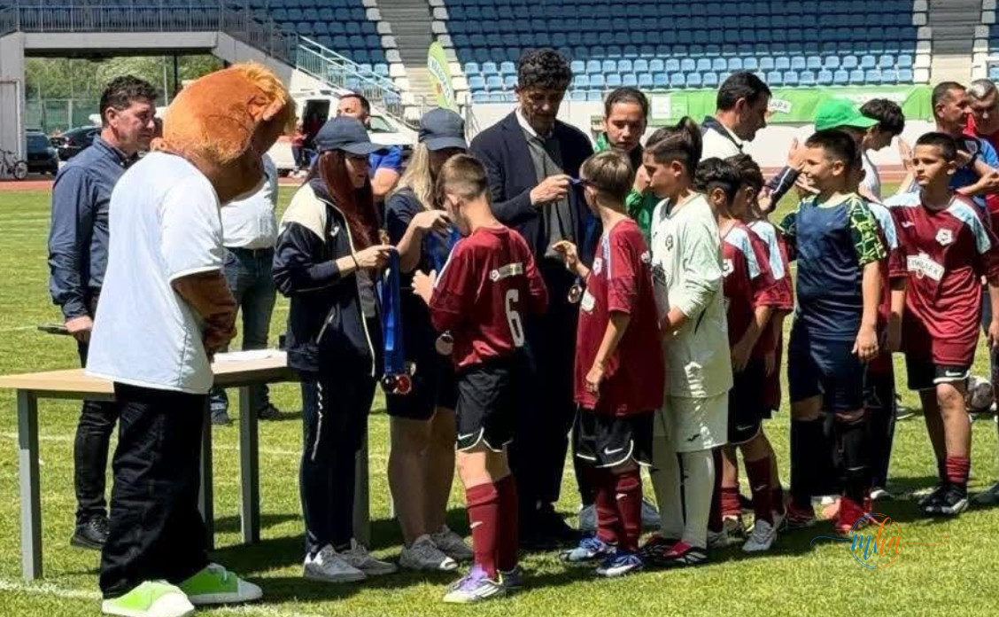
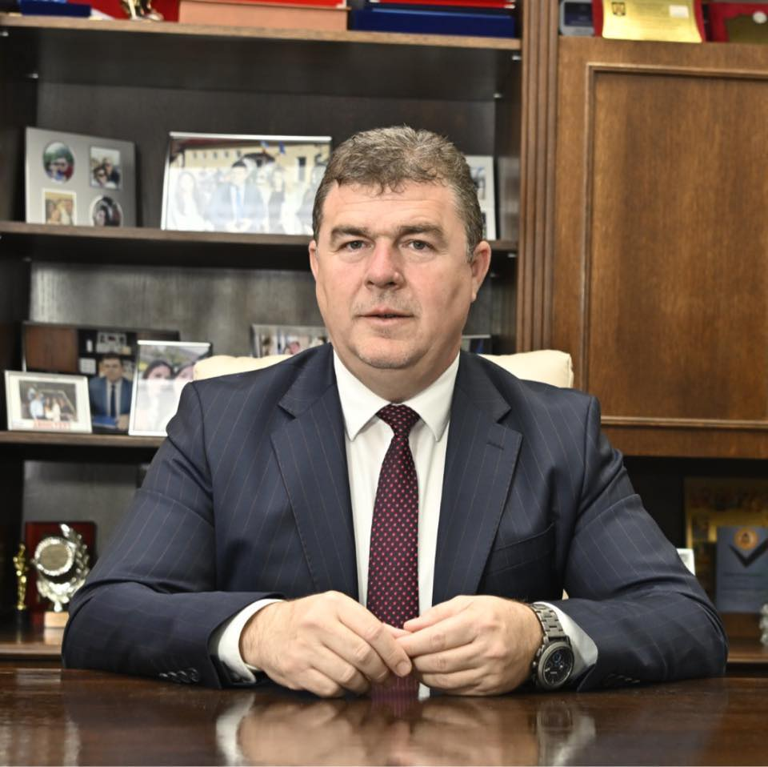

Un rezultat de excepție pentru fotbalul școlar mehedințean! Echipa de fotbal a Școlii Gimnaziale „Alice Voinescu" din Drobeta-Turnu Severin a obținut locul III la etapa națională a Olimpiadei Naționale a Sportului Școlar, reușind să se impună în finala mică a celei mai importante competiții sportive școlare din România. Performanța este cu atât mai valoroasă cu cât la competiție au participat peste 10.000 de elevi din întreaga țară.
Locul III — Olimpiada Națională a Sportului Școlar
Fotbal · Echipa Școlii Gimnaziale „Alice Voinescu"
Drobeta-Turnu Severin, județul Mehedinți
O performanță națională cu mii de rivali pe traseu
Olimpiada Națională a Sportului Școlar este cea mai amplă competiție sportivă școlară organizată în România, reunind an de an zeci de mii de elevi din toate județele țării. Ajungerea pe podiumul național în proba de fotbal, după eliminarea unor echipe din județe cu tradiție sportivă puternică, reprezintă o realizare remarcabilă pentru tânăra echipă din Drobeta-Turnu Severin.
Tinerii sportivi severineni au reprezentat cu cinste municipiul Drobeta-Turnu Severin și județul Mehedinți, reușind să ajungă pe podium după un parcurs apreciat atât de organizatori, cât și de participanți. Fiecare meci jucat pe traseul spre finala națională a fost o lecție de fair-play, determinare și spirit de echipă.
Coordonați de profesorii Ovidiu Brehui și Adrian Nițișor
Performanța obținută nu ar fi fost posibilă fără munca dedicată a celor doi profesori coordonatori ai echipei: Ovidiu Brehui și Adrian Nițișor. Rezultatul obținut vine ca urmare directă a pregătirii sistematice, disciplinei și spiritului de echipă cultivate pe parcursul întregii competiții. Sub îndrumarea lor, elevii au demonstrat că sportul școlar din Mehedinți poate produce performanță la nivel național.

Foto: Miodrag Belodedici înmânează medaliile echipei Școlii „Alice Voinescu" — Olimpiada Națională a Sportului Școlar 2026
Medaliile, înmânate de legenda Miodrag Belodedici
Un moment special al competiției a fost ceremonia de premiere, unde cupa și diplomele au fost oferite de nimeni altul decât Miodrag Belodedici — una dintre cele mai mari legende ale fotbalului românesc și unul dintre puținii jucători din lume care au reușit performanța de a câștiga de două ori Cupa Campionilor Europeni, cu Steaua București (1986) și cu Steaua Roșie Belgrad (1991).
Gestul sportivului legendar de a fi prezent la premierea unor echipe de copii reprezintă un semnal puternic legat de importanța pe care fotbalul românesc o acordă generațiilor viitoare. Pentru elevii din Drobeta-Turnu Severin, primirea medaliei de bronz direct din mâinile lui Belodedici a fost cu siguranță un moment de neuitat, un reper de inspirație pentru întreaga lor carieră sportivă.
Echipa Școlii „Alice Voinescu" a demonstrat că fotbalul școlar mehedințean poate produce performanță de nivel național. Locul III dintr-un lot de peste 10.000 de elevi nu este un accident — este rodul muncii, al disciplinei și al pasiunii pentru sport.
Mesajul președintelui Consiliului Județean Mehedinți

Fotbalul școlar — o investiție în viitorul sportului mehedințean
Performanța echipei Școlii „Alice Voinescu" la Olimpiada Națională a Sportului Școlar vine să confirme o tendință pozitivă în sportul școlar din județul Mehedinți. Alături de rezultatele obținute recent la înot și la alte discipline, sportul practicat în unitățile de învățământ mehedințene demonstrează că investiția în formarea sportivă a copiilor aduce roade vizibile la nivel național.
Redacția MehedintiAzi.ro felicită echipa Școlii „Alice Voinescu", profesorii coordonatori Ovidiu Brehui și Adrian Nițișor, conducerea școlii și părinții care i-au susținut pe tinerii sportivi de-a lungul întregului parcurs competițional. Mehedințul poate fi mândru!